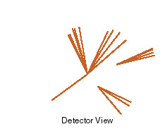
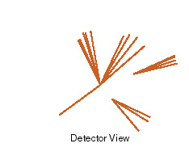

The Fermilab accelerator collided a proton with an antiproton inside a detector that recorded the tracks of the various products of this collison. A few hundred collisions among trillions gave physicists the evidence for top quark's existence.
The observed event itself appears to be a confusing clutter of various particle paths. A computer analyzed this event to show clusters of mesons, a positron, and an inferred neutrino. Looking at this, physicists were able to deduce that a top quark decayed into a W particle and a b quark, even though these decayed before we could observe them.
(The links on this page switch between different images of the event
interpretation.)

